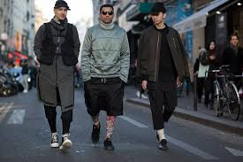

Sobre Nosotros
Calle13Wear nació del asfalto, la música, el arte callejero y las ganas de romper con lo clásico. Creamos ropa urbana con personalidad, para que cada persona pueda expresarse a su manera.
Cada prenda lleva una estampa diseñada por artistas independientes. Somos más que ropa: somos cultura de calle.
Nuestra Misión
En Calle13Wear creemos en la libertad de expresión y en el poder de la moda como herramienta de cambio. Buscamos conectar con las personas que quieren destacar y mostrarse tal como son, sin filtros ni barreras. Cada diseño es único, pensado para representar la esencia de la cultura urbana y el arte callejero.
Nuestra Historia
Calle13Wear nació en el corazón de la ciudad, influenciada por las calles, el graffiti y la música. Empezamos como un pequeño proyecto entre amigos, con el sueño de crear una marca que reflejara nuestra pasión por lo urbano y lo auténtico. Hoy somos una marca reconocida que apuesta por el arte en cada prenda y apoya a jóvenes artistas emergentes.
"Vestite con actitud. Vestite con Calle13Wear."